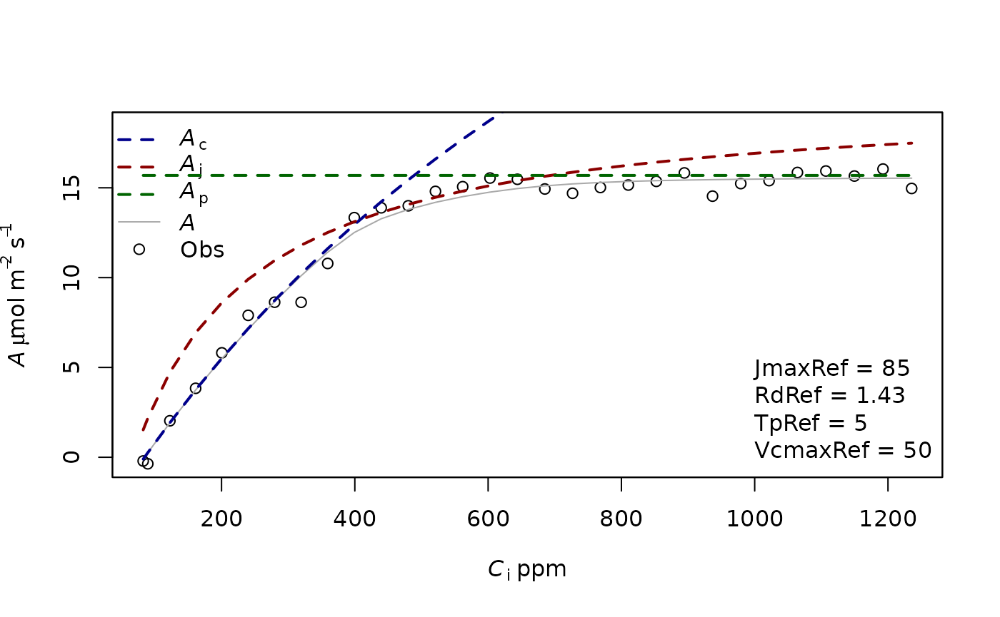
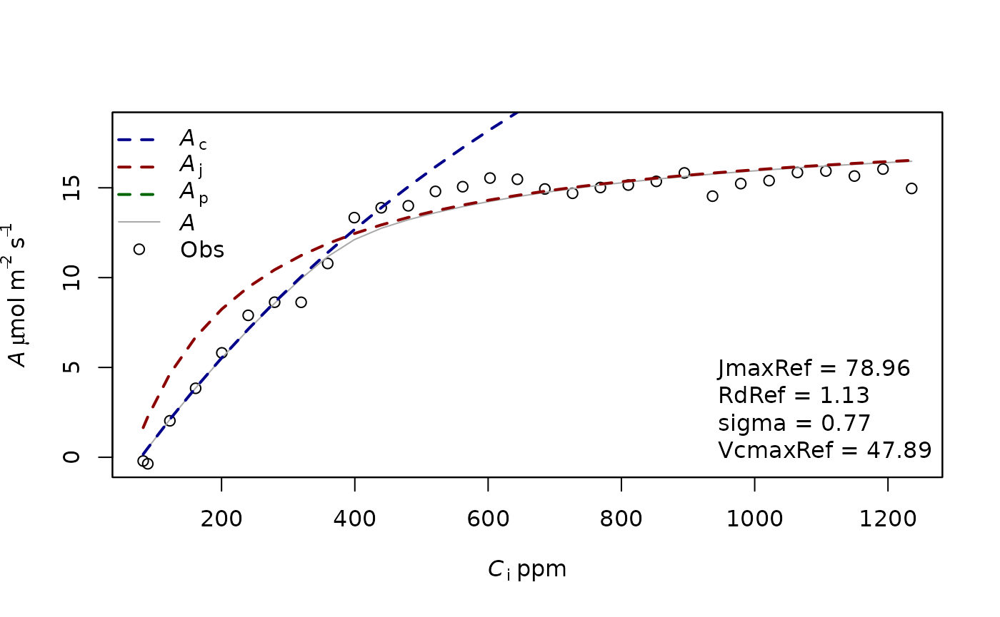

Aci_fitting
Julien LAMOUR
04/20/2023
Aci_fitting.RmdFitting an Aci curve
The objective of this tutorial is to illustrate how to fit an A-Ci curve using the “LeafGasExchange” package. In this tutorial, we first simulate an A-Ci curve with known photosynthetic parameters and noise. This curve is then fitted to retrieve the parameters.
Simulating an Aci curve
For this example we first simulate a photosynthesis curve, but it would work the same if the data were not simulated but measured. The data simulation is done using the function f.A. This function needs a list of photosynthetic parameters which are produced using the function f.make.param() and a list of input variables (CO2 at the surface of the leaf, leaf temperature, incident light, RH). To have more information on the function f.make.param, you can use the command ?f.make.param in R console.
param=f.make.param(VcmaxRef = 50,JmaxRef=50*1.7,TpRef=50/10)
CO2=seq(50,1500,50)
Tleaf=30+273.16
Tair=27+273.16
PAR=1800
RH=80
simul=f.A(PFD = PAR,cs = CO2,Tleaf = Tleaf,Tair = Tair,RH = RH,param = param)
# Here we include a normal error
simul$A=simul$A+rnorm(n=length(simul$A),mean = 0,sd = 0.6)
measures=data.frame(Tleaf=Tleaf,Ci=simul$ci,Qin=PAR,A=simul$A)We display this simulated curve using the function f.plot
f.plot(measures = measures,type = 'Aci',list_legend = param[c('VcmaxRef','JmaxRef','TpRef','RdRef')],param = param)
Fitting an Aci curve
To fit an Aci curve, it is necessary to detail the parameter that we want to estimate. All the parameters present in f.make.param can potentially be fitted even if it would not always make sense. We do a first fitting with only the parameters VcmaxRef, JmaxRef and RdRef. Those parameters have to be given in the list Start, with initial values. The method will look for different initial values around those values so it is not necessary to give very good ones, just not too stupid ones. The photosynthetic parameters have to be given in the list param. This is used to determine what should be the parameters for the temperature dependence, for the leaf absorbance, theta, etc. By default, the equations and parameters used in the TBM FATES to simulate the photosynthesis are used. In this example, we also give a very high value to TpRef so the TPU limitation is not considered when fitting the curve.
fitting1=f.fitting(measures = measures,Start = list(JmaxRef = 30, VcmaxRef = 50, RdRef = 1),param=f.make.param(),
modify.init=TRUE,do.plot=TRUE,type='Aci')## $par
## JmaxRef VcmaxRef RdRef
## 77.0202708 47.9096669 0.8837133
##
## $value
## [1] 16.89123
##
## $counts
## function gradient
## 214 NA
##
## $convergence
## [1] 0
##
## $message
## NULL
##
## [1] "sd 0.750360470933128"
## Length Class Mode
## 1 mle2 S4
In a second example we now also fit TpRef
fitting2=f.fitting(measures = measures,Start = list(JmaxRef = 30, VcmaxRef = 50, RdRef = 1, TpRef=9),param=f.make.param(),
modify.init=TRUE,do.plot=TRUE,type='Aci')## $par
## JmaxRef VcmaxRef RdRef TpRef
## 82.947930 49.612135 1.168832 4.913234
##
## $value
## [1] 11.28015
##
## $counts
## function gradient
## 407 NA
##
## $convergence
## [1] 0
##
## $message
## NULL
##
## [1] "sd 0.613192484693365"
## Length Class Mode
## 1 mle2 S4
The fitting returns a list of 3 objects. The first object corresponds to the fitting using a minimum square function whereas the second object corresponds to a maximum likelihood derived using the mle2 package. This latter method is useful because it allows us to calculate the confidence interval of the parameters.
The third object correspond to the mean environmental values present in the input data file of the function (see the help of f.fitting for more info).
confint(fitting2[[2]])## 2.5 % 97.5 %
## sigma 0.4857392 0.8083757
## JmaxRef 77.4773088 89.2158930
## VcmaxRef 45.1100901 54.9294156
## TpRef 4.6493722 5.1903012
## RdRef 0.4440687 1.9172811It is possible to compare the AIC of the two models using the base function AIC. The lower AIC corresponds to the best model, showing that in this case and as expected, the TPU limitation is useful to improve the fit of the model.
AIC(fitting1[[2]])## [1] 75.90422
AIC(fitting2[[2]])## [1] 65.79171It is also possible to calculate the interval of confidence and prediction of the Aci curve from the outputs of the fitting.
var_cov=fitting2[[2]]@vcov
random_param=rmvnorm(1000,mean=fitting2[[2]]@coef[c('sigma','JmaxRef','VcmaxRef','TpRef','RdRef')],sigma = var_cov)
random_simul=matrix(data = NA,nrow = 1000,ncol = nrow(measures))
for(i in 1:1000){
random_simul[i,]=f.Aci(PFD = measures$Qin,ci = measures$Ci,Tleaf =measures$Tleaf,param = f.make.param(VcmaxRef=random_param[i,'VcmaxRef'],JmaxRef=random_param[i,'JmaxRef'],TpRef=random_param[i,'TpRef'],
RdRef=random_param[i,'RdRef']))$A
}
fit_pred=f.Aci(PFD = measures$Qin,ci = measures$Ci,Tleaf =measures$Tleaf,param = f.make.param(VcmaxRef=fitting2[[2]]@coef[c('VcmaxRef')],JmaxRef=fitting2[[2]]@coef[c('JmaxRef')],TpRef=fitting2[[2]]@coef[c('TpRef')],
RdRef=fitting2[[2]]@coef[c('RdRef')]))
sd_mean=apply(X=random_simul,MARGIN=2,FUN=sd)
sd_res=fitting2[[2]]@coef['sigma']
sd_tot=sqrt(sd_mean^2+sd_res^2)
simul_confint=rbind(fit_pred$A-1.96*sd_mean,fit_pred$A+1.96*sd_mean)
simul_pred=rbind(fit_pred$A-1.96*sd_tot,fit_pred$A+1.96*sd_tot)
f.plot(measures = measures,type = 'Aci',list_legend = param[c('VcmaxRef','JmaxRef','TpRef','RdRef')],param = param)
polygon(c(measures$Ci ,rev(measures$Ci)),c(simul_pred[1,], rev(simul_pred[2,])),
col=adjustcolor("lightgrey",alpha.f=0.5),border=NA)
polygon(c(measures$Ci ,rev(measures$Ci)),c(simul_confint[1,], rev(simul_confint[2,])),
col=adjustcolor("#99CC99",alpha.f=0.5),border=NA)